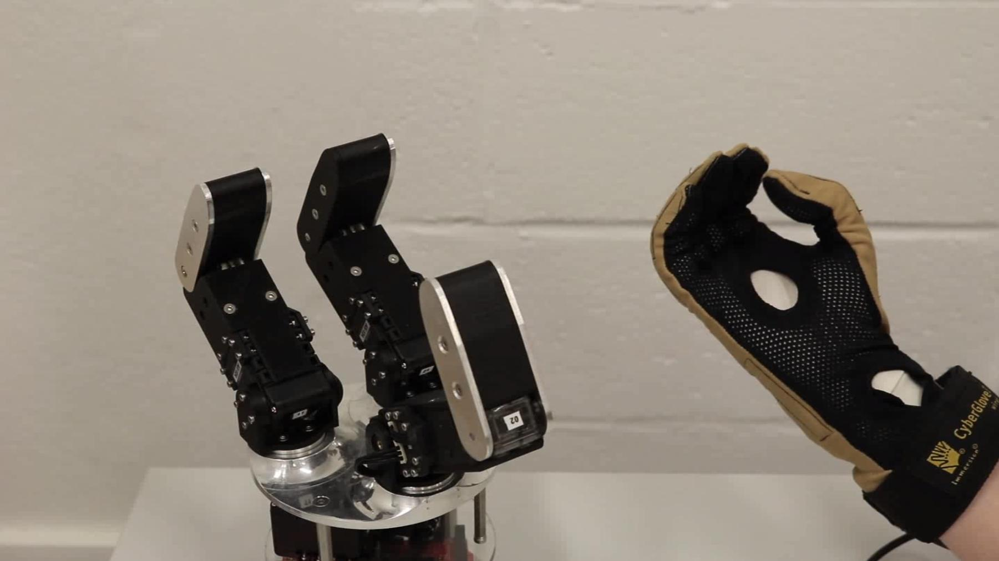
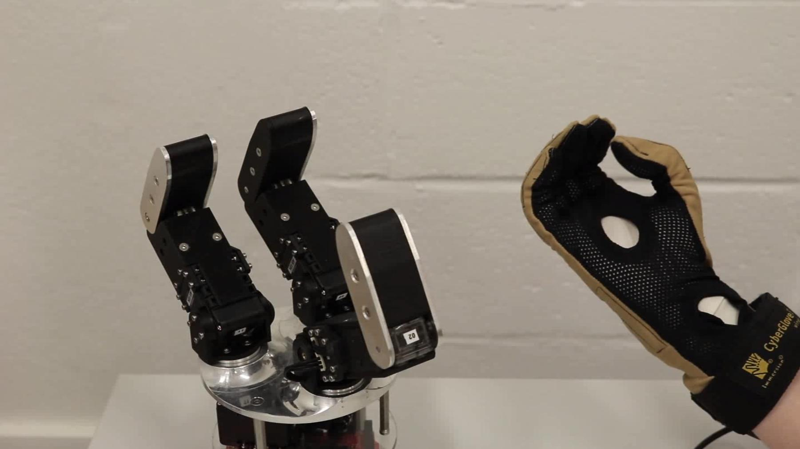

09/2017 – 09/2018
- Organized workshops for middle schoolers to perform supervised science experiments
Phi Sigma Pi Honors Fraternity
Secretary
09/2013 – 09/2014
MENTORSHIP/TEACHING
Teaching Assistant – Introduction to Robotics
Fall 2018
MECEE4602
taught by Dr. Ciocarlie at Columbia University
- The class is a graduate level introduction to robotics, topics include forward and inverse kinematics, cartesian control, stochastic motion planning and Bayesian state estimation
- Responsibilities include holding office hours, creating coding homeworks (both solutions and starter code), and creating autograding scripts which allow students to test their code before submission and enable efficient grading, and maintaining SVN repositories for the students to submit their code
- Homeworks and autograding scripts created for the class all involved simulated robots, robot visualization in RViz, ROS (topics, tf, publishers, subscribers, services, etc)
Mentored a NSF REU Summer Scholar
Summer 2018
Abigail Herschman, University of South Carolina
Teaching Assistant – Applied Robotics: Algorithms and Software
Fall 2017
MECEE4603
taught by Dr. Ciocarlie at Columbia University
- The class introduces the students to the programming techniques, algorithms, and theories behind robotic controls
- Responsibilities include holding office hours, creating solutions to involved coding homeworks, writing autograding scripts which allow for efficient grading, moderating online forums, and helping students debug their code
- Homeworks for the class involved simulated robots, RViz, and various aspects of ROS
PUBLICATIONS
Peer Reviewed Journal Publications
- Park, S., Meeker, C., Weber, L. M., Bishop, L., Stein, J., & Ciocarlie, M. (2018). Multimodal Sensing and Interaction for a Robotic Hand Orthosis. arXiv preprint arXiv:1808.00092. In press, RA-L RAS Special Issue.
Peer Reviewed Conference Publications
- Meeker, C., & Ciocarlie, M. (2018). EMG-Controlled Hand Teleoperation Using a Continuous Teleoperation Subspace. arXiv preprint arXiv: 1809.09730. Under review.
- Meeker, C., Rasmussen, T., & Ciocarlie, M. (2018). Intuitive Hand Teleoperation by Novice Operators Using a Continuous Teleoperation Subspace. In Rehabilitation Robotics (ICORR), 2018 International Conference on. IEEE.
- Meeker, C., Park, S., Bishop, L., Stein, J., & Ciocarlie, M. (2017, July). EMG pattern classification to control a hand orthosis for functional grasp assistance after stroke. In Rehabilitation Robotics (ICORR), 2017 International Conference on (pp. 1203-1210). IEEE.
Conference Abstracts/Posters
- Park, S., Meeker, C., Weber, L. M., Bishop, L., Stein, J., & Ciocarlie, M. (2018, October). Multimodal Intent Inferral with a Wearable Hand Orthosis. Intelligent Robots and Systems, 2018 IEEE/RSJ International Conference on.
- Meeker, C., Park, S., Bishop, L., Stein, J., & Ciocarlie, M. (2017, July). EMG Control for a Hand Orthosis: from Standalone Training to Device Integration and Task Execution. In Rehabilitation Robotics (ICORR), 2017 International Conference on. IEEE.
SERVICE/OUTREACH
- Speaker for the IDEAL School's Robotics Club “Inside Engineering” Columbia SEAS visit, Spring 2018.
- Invited speaker at the Family Astronomy Night Series hosted by the Intrepid Sea, Air and Space Museum, part of a team presenting our work on rehabilitation robotics to audience of children and their families, July 2017.
- Speaker for the Columbia Inside Engineering program, hosting women high school students for hands-on demos of engineering projects, Spring 2017.
- Group leader at Girls Science Day, led middle school girls during science camp experiments, Fall 2017
- After-school teacher at Robogals, teaching 4th grade girls robotics, Fall 2015-Fall 2016
SKILLS
- Strong object-oriented programming skills in python
- ROS, SVN, scipy, sklearn, MATLAB, Solidworks
- Proficient using Windows, Linux and Unix environments
- Proficient using Microsoft Office, excellent written and verbal communication
ABOUT ME
I am a roboticist and an engineer, I am fascinated by how the human body works and enjoy discussions on how to get robots to emulate and work with humans.
In my spare time, I swing dance, crossstitch and am an avid fan of musicals.
 
